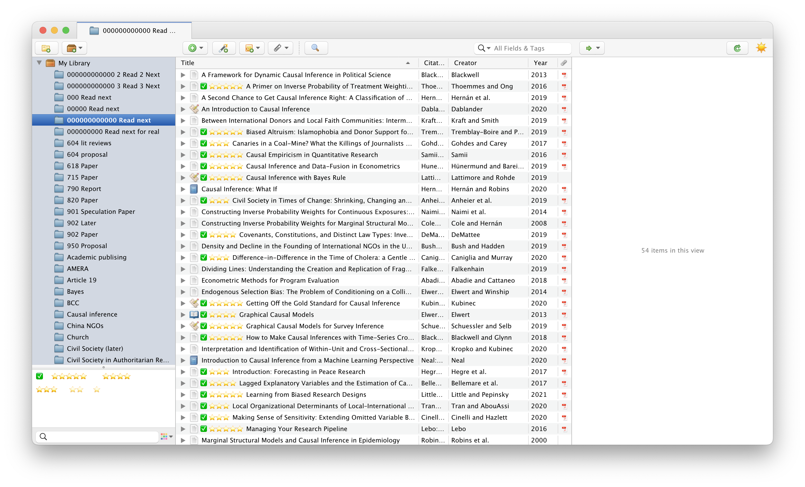

![]()
My longstanding workflow for writing, citing, and PDF management
When I started my first master’s degree program in 2008, I decided to stop using Word for all my academic writing and instead use plain text Markdown for everything. Markdown itself had been a thing for 4 years, and MultiMarkdown—a pandoc-like extension of Markdown that could handle BibTeX bibliographies—was brand new. I did all my writing for my courses and my thesis in Markdown and converted it all to PDF through LaTeX using MultiMarkdown. I didn’t know about pandoc yet, so I only ever converted to PDF, not HTML or Word.
I stored all my bibliographic references in a tiny little references.bib BibTeX file that I managed with BibDesk. BibDesk is a wonderful and powerful program with an active developer community and it does all sorts of neat stuff like auto-filing PDFs, importing references from DOIs, searching for references on the internet from inside the program, and just providing a nice overall front end for dealing with BibTeX files.
I kept using my MultiMarkdown + LaTeX output system throughout my second master’s degree, and my references.bib file and PDF database slowly grew. R Markdown hadn’t been invented yet and I still hadn’t discovered pandoc, so living in a mostly LaTeX-based world was fine.
When I started my PhD in 2012, something revolutionary happened: the {knitr} package was invented. The new R Markdown format let you to mix R code with Markdown text and create multiple outputs (HTML, LaTeX, and docx) through pandoc. I abandoned MultiMarkdown and fully converted to pandoc (thanks also in part to Kieran Healy’s Plain Person’s Gide to Plain Text Social Science). Since 2012, I’ve written exclusively in pandoc-flavored Markdown and always make sure that I can convert everything to PDF, HTML, and Word (see the “Manuscript” entry in the navigation bar here, for instance, where you can download the preprint version of that paper in a ton of different formats). I recently converted a bunch of my output templates to Quarto pandoc too.
During all this time, I didn’t really keep up with other reference managers. I used super early Zotero as an undergrad back in 2006–2008, but it didn’t fit well with my Markdown-based workflow, so I kind of ignored it. I picked it up again briefly at the beginning of my PhD, but I couldn’t get it to play nicely with R Markdown and pandoc, so I kept using trusty old BibDesk. My references.bib file got bigger and bigger as I took more and more doctoral classes and did more research, but BibDesk handled the growing library just fine. As of today, I’ve got 1,400 items in there with nearly 1,000 PDFs, and everything still works great—mostly.
Why switch away from BibTeX and BibDesk?
BibDesk got me through my dissertation and all my research projects up until now, so why consider switching away to some other system? Over the past few years, as I’ve done more reading on my iPad and worked on more coauthored projects, I’ve run into a few pain points in my citation workflow.
Problem 1: Cross-device reading
I enjoy reading PDFs on my iPad (particularly in the iAnnotate app), but getting PDFs from BibDesk onto the iPad has always required a bizarre dance:
- Store
references.biband the BibDesk-managed folder of PDFs in Dropbox - Use the References iPad app to open the BibTeX file from Dropbox on the iPad
- Use iAnnotate to navigate Dropbox and find the PDF I want to read
- Read and annotate the PDF in iAnnotate
- Send the finished PDF from iAnnotate back to Dropbox and go back to References to ensure that the annotated PDF updates
I’d often get sick of this convoluted process and just find the PDF on my computer and AirDrop it to my iPad directly, completely circumventing Dropbox. I’d then AirDrop it back to my computer and attach the marked up PDF to the reference in BibDesk. It’s inconvenient, but less inconvenient than bouncing around a bunch of different apps and hoping everything works.
Problem 3: BibTeX was designed for LaTeX—but just LaTeX
BibTeX works great with LaTeX. That’s why it was invented in the first place! The fact that things like pandoc work with it is partially a historical accident—.bib files were a convenient and widely used plain text bibliography format, so pandoc and MultiMarkdown used BibTeX for citations.
But citations are often more complicated than BibTeX can handle. Consider the LaTeX package biblatex-chicago—in order to be fully compliant with all the intricacies of the Chicago Manual of Style, it has to expand the BibTeX (technically BibLaTeX) format to include fields like entrysubtype for distinguishing between magazine/newspaper articles and journal articles, among dozens of other customizations and tweaks. BibTeX has a limited set of entry types, and anything that’s not one of those types gets shoehorned into the misc type.
Internally, programs like pandoc that can read BibTeX files convert them into a standard Citation Style Language (CSL) format, which it then uses to format references as Chicago, APA, MLA, or whatever. It would be great to store all my citations in a CSL-compliant format in the first place rather than as a LaTeX-only format that has to be constantly converted on-the-fly when converting to any non-LaTeX output.
The solution: Zotero
Zotero conveniently fixes all these issues:
It has a synchronization service that works across platforms (including iOS). It can work with Dropbox too if you don’t want to be bound by their file size limit or pay for extra storage, though I ended up paying for storage to (1) support open source software and (2) not have to deal with multiple programs. I’ve been doing the BibDesk → iAnnotate → Dropbox → MacBook → AirDrop dance for too many years—I just want Zotero to handle all the syncing for me.
-
It’s super easy to collaborate with Zotero. You can create shared group libraries with different sets of coauthors and not worry about Dropbox synchronization issues or accidental deletion of
}characters in the.bibfile. For one of my reading-intensive class, I’ve even created a shared Zotero group library that all the students can join and cite from, which is neat.It’s also far easier to maintain a master list of references. You can create a Zotero collection for specific projects, and items can live in multiple collections. Editing an item in one collection updates that item in all other collections. Zotero treats collections like iTunes/Apple Music playlists—just like songs can belong to multiple playlists, bibliographic entries can belong to multiple collections.
Zotero follows the CSL standard that pandoc uses. It was the first program to adopt CSL (way back in 2006!). It supports all kinds of entry types and fields, beyond what BibTeX supports.
Preparing for the migration
Migrating my big .references.bib file to Zotero was a relatively straightforward process, but it required a few minor shenanigans to get everything working right.
Make a backup
Preparing everything for migration meant I had to make a ton of edits to the original references.bib file, so I made a copy of it first and worked with the copy.
Install extensions
To make Zotero work nicely with a pandoc-centric writing workflow, and to make file management and tag management easier, I installed these three extensions:
Ratings and read status
BibDesk allows you to add a couple extra metadata fields to entries for ratings and to mark them as read. I’ve used these fields for years and find them super useful for keeping track of how much I like articles and for remembering which ones I’ve actually finished.
Internally, BibDesk stores this data as entries in the raw BibTex:
@article{the_citekey_for_this_entry,
author = {Whoever},
title = {Whatever},
...
rating = {4},
read = {1}}These fields are preserved and transferred to Zotero when you import the file, but they show up in the “Extra” field and aren’t easily filterable or sortable there:
I decided to treat these as Zotero tags, which BibDesk calls keywords. I considered making some sort of programmatic solution and writing a script to convert all the rating and read fields to keywords, but that seemed like too much work—many entries have existing keywords and parsing the file and concatenating ratings and read status to the list of keywords would be hard.
So instead I sorted all my entries in BibDesk by rating, selected all the 5 star ones and added a zzzzz tag, selected all the 4 star ones and added a zzzz tag, and so on (so that 1 star entries got a z) tag. I then sorted the entries by read status and assigned xxx to all the ones I’ve read. These tag names were just temporary—in Zotero I changed these to emojis (⭐️⭐️⭐️ and ✅), but because I was worried about transferring complex Unicode characters like emojis across programs, I decided to simplify things by temporarily just using ASCII characters.
Files
A note on BibDesk’s stored filename
BibDesk can autofile attached PDFs and manage their location. To keep track of where the files are, it stores their path as a base64-encoded path in a bdsk-file-N field in the .bib file, like this:
@article{HeissKelley:2017,
author = {Andrew Heiss and Judith G. Kelley},
doi = {10.1086/691218},
journal = {Journal of Politics},
month = {4},
number = {2},
pages = {732--41},
title = {Between a Rock and a Hard Place: International {NGOs} and the Dual Pressures of Donors and Host Governments},
volume = {79},
year = {2017},
bdsk-file-1 = {YnBsaXN0MDDSAQIDBFxyZWxhdGl2ZVBhdGhZYWxpYXNEYXRhXxBcUGFwZXJzL0hlaXNzS2VsbGV5MjAxNyAtIEJldHdlZW4gYSBSb2NrIGFuZCBhIEhhcmQgUGxhY2UgSW50ZXJuYXRpb25hbCBOR09zIGFuZCB0aGUgRHVhbC5wZGZPEQJ8AAAAAAJ8AAIAAAxNYWNpbnRvc2ggSEQAAAAAAAAAAAAAAAAAAADfgQ51QkQAAf////8fSGVpc3NLZWxsZXkyMDE3IC0gI0ZGRkZGRkZGLnBkZgAAAAAAAAAAAAAAAAAAAAAAAAAAAAAAAAAAAAAAAAAA/////9T5sk0AAAAAAAAAAAABAAMAAAogY3UAAAAAAAAAAAAAAAAABlBhcGVycwACAHwvOlVzZXJzOmFuZHJldzpEcm9wYm94OlJlYWRpbmdzOlBhcGVyczpIZWlzc0tlbGxleTIwMTcgLSBCZXR3ZWVuIGEgUm9jayBhbmQgYSBIYXJkIFBsYWNlIEludGVybmF0aW9uYWwgTkdPcyBhbmQgdGhlIER1YWwucGRmAA4ArABVAEgAZQBpAHMAcwBLAGUAbABsAGUAeQAyADAAMQA3ACAALQAgAEIAZQB0AHcAZQBlAG4AIABhACAAUgBvAGMAawAgAGEAbgBkACAAYQAgAEgAYQByAGQAIABQAGwAYQBjAGUAIABJAG4AdABlAHIAbgBhAHQAaQBvAG4AYQBsACAATgBHAE8AcwAgAGEAbgBkACAAdABoAGUAIABEAHUAYQBsAC4AcABkAGYADwAaAAwATQBhAGMAaQBuAHQAbwBzAGgAIABIAEQAEgB6VXNlcnMvYW5kcmV3L0Ryb3Bib3gvUmVhZGluZ3MvUGFwZXJzL0hlaXNzS2VsbGV5MjAxNyAtIEJldHdlZW4gYSBSb2NrIGFuZCBhIEhhcmQgUGxhY2UgSW50ZXJuYXRpb25hbCBOR09zIGFuZCB0aGUgRHVhbC5wZGYAEwABLwAAFQACAA3//wAAAAgADQAaACQAgwAAAAAAAAIBAAAAAAAAAAUAAAAAAAAAAAAAAAAAAAMD}}Zotero doesn’t parse that gnarly field—it needs a field named file—and it doesn’t decode that messy string into a plain text file path, so the attached PDF won’t get imported correctly.
However, thanks to Emiliano Heyns, the Better BibTeX add-on will automatically convert these base64-encoded paths to plain text fields that Zotero can work with just fine. All PDFs will import automatically!
Customizing Zotero’s renaming rules
I wanted all the PDFs that Zotero would manage to have nice predictable filenames. In BibDesk, I used this pattern:
citekey - First few words of title.pdfThat’s been fine, but it uses spaces in the file name and doesn’t remove any punctuation or special characters, so it was a little trickier to work with in the terminal or with scripts or for easy consistent searching (especially when searching in the iPad Dropbox app when looking for a PDF to read). But because I set up that pattern in 2008, path dependency kind of locked me in and I’ve been unwilling to change it since.
Since I’m starting with a whole new reference manager, I figured it was time to adopt a better PDF naming system. In the ZotFile preferences, I set this pattern:
{%a-}{%y-}{%t}…which translates to
up_to_three_last_names-year-first_few_characters_of_title.pdf(see this for a list of all the possible wildcards)
…with - separating the three logical units (authors, year, title), and _ separating all the words within each unit (which follows Jenny Bryan’s principles of file naming). In practice, the pattern looks like this:
heiss_kelley-2017-between_a_rock_and_a_hard_place.pdfI had to tweak a few other renaming settings too. Here’s the final set of preferences:
I wanted to switch the roles of - and _ and do
heiss-kelley_2017_between-a-rock-and-a-hard-place.pdf…but Zotero and/or ZotFile seems to hardwire _ as the space replacement in its titles. Oh well.
Citekeys
In BibDesk, I’ve had a citation key pattern that I’ve used for years: Lastname:Year, with up to three last names for coauthored things, and an incremental lowercase letter in the case of duplicates:
HeissKelley:2017
HeissKelley:2017a
Imbens:2021
LundbergJohnsonStewart:2021Zotero and Better BibTeX preserve citekeys when you import a .bib file, but I wanted to make sure I keep using this system for new items I add going forward, so I changed the Better BibTeX preferences to use the same pattern:
auth(0,1) + auth(0,2) + auth(0,3) + ":" + yearPost-import tweaks
With all that initial prep work done, I imported the .bib file into my Zotero library (File > Import…). I made sure “Place imported collections and items to new collection” was checked and that files were copied to the Zotero storage folder:
Ratings and read status
The Tags panel in Zotero then showed all the project/class-specific keywords from BibDesk, in addition to the ratings and read status tags I added previously:
I renamed each of the zzz* rating tags to use emoji stars and renamed the xxx read tag to use ✅.
Zotero has the ability to assign tags specific colors and pin them in a specific order, which also makes the tags display in the main Zotero library list. Following advice from the Zotero Tag extension, I pinned the read status ✅ tag as the first tag, the 5-star rating as the second tag, the 4-star rating as the third tag, and so on.
Now the read status and ratings tags are easily accessible and appear directly in the main Zotero library list!
incollection / inbook and crossref
This used to cause problems with child references not importing fields from their parents, but thanks to Emiliano Heynes, this all works flawlessly if you have verison 6.7.47+ of Better BibTeX installed.
BibDesk natively supports the crossref field, which biber and biblatex use when working with LaTeX. This field lets you set up child/parent relationships with items, where children inherit fields from their parents. For instance, consider these two items—an edited book with lots of chapters from different authors and a chapter from that book:
@inbook{El-HusseiniToeplerSalamon:2004,
author = {Hashem El-Husseini and Stefan Toepler and Lester M. Salamon},
chapter = {12},
crossref = {SalamonSokolowski:2004},
pages = {227--32},
title = {Lebanon}}
@book{SalamonSokolowski:2004,
address = {Bloomfield, CT},
editor = {Lester M. Salamon and S. Wojciech Sokolowski},
publisher = {Kumarian Press},
title = {Global Civil Society: Dimensions of the Nonprofit Sector},
volume = {2},
year = {2004}}In BibDesk, the chapter displays like this:
Fields like book title, publisher, year, etc., are all greyed out because they’re inherited from the parent book, with the citekey SalamonSokolowski:2004
If you install version 6.7.47+ of the Better BibTeX add-on, the chapter will inherit all the information from its parent book—the book title, date, publisher, etc., will all be imported correctly:
All done!
And with that, I have a complete version of my 15-year-old references.bib file inside Zotero!

Example workflow with Quarto / R Markdown / pandoc
Part of the reason I’ve been hesitant to switch away from BibDesk for so long is because I couldn’t figure out a way to connect a Markdown document to my Zotero database. With documents that get parsed through pandoc (like R Markdown or Quarto), you add a line in the YAML front matter to specify what file contains your references:
---
title: Whatever
author: Whoever
bibliography: references.bib
---Since Zotero keeps everything in one big database, I didn’t see a way to add something like bibliography: My Zotero Database to the YAML front matter—pandoc requires that you point to a plain text file like .bib or .json or .yml, not a Zotero database.
However, the magical Better BibTeX add-on clarified everything for me and makes it super easy to point pandoc at a single file that contains a collection of reference items.
Export collection to .bib file
First, create a collection of items that you want to cite in your writing project. Since collections are like playlists and items can belong to multiple collections, there’s no need to manage duplicate entries or anything (like I was running into with Problem 2 above).
Right click on the collection name and choose “Export collection…”.
Change the format to “Better BibLaTeX”, check “Keep updated”, and choose a place to save the resulting .bib file.
You could also export it as “Better CSL JSON” or “Better CSL YAML”, which would create a .json or .yml file that you could then point to in your YAML front matter, which would keep everything in CSL format instead of converting things to .bib and back again (see Problem 3 above). However, in my academic writing projects I still like to let LaTeX, BibLaTeX, and biber handle the citation generation instead of pandoc for PDFs, so I still rely on .bib files. But if you’re not converting to PDF, or if you’re letting the CSL style template handle the citations instead of BibLaTeX, you should probably keep everything as JSON or YAML instead of .bib.
The “Keep updated” option is the magical part of this whole thing. If you add an item or edit an existing item in the collection in Zotero, Better BibTeX will automatically re-export the collection to the .bib file. You can have one central repository of citations and lots of dynamically updated plain text .bib files that you don’t have to edit or keep track of. Truly magical.
Point the .qmd / .Rmd / .md to the exported file
You’ll now have a .bib file that contains all the references that you can cite. Put that filename in your front matter (use .json or .yml if you export the file as JSON or YAML instead):
---
title: Whatever
author: Whoever
bibliography: name_of_file_you_exported_from_zotero.bib
---Cite things
Cite things like normal.
Because the front matter is pointed at a plain text .bib file that contains all the bibliographic references, it’ll generate the citations correctly. And because Better BibTeX is configured to automatically update the exported plain text file, any changes you make in Zotero will automatically be reflected. Again, this is magic.
RStudio-based alternative
Alternatively, if you write in RStudio, you can connect RStudio to your Zotero database and have it do a similar auto-export thing. You can also tell it to use Better BibTeX to keep things automatically synced:
(See here for more details about Zotero citations in RStudio)
One extra nice thing about using RStudio is its fancy Insert Citation dialog, which makes adding citations in Markdown just like adding citations in Word or Google Docs. It only works in the Visual Markdown Editor, though, which I don’t normally use, so I just use Better BibTeX alone rather than RStudio’s Zotero connection when I write in RStudio.
Citation
@online{heiss2023,
author = {Heiss, Andrew},
title = {How to Migrate from {BibDesk} to {Zotero} for Pandoc-Based
Writing},
date = {2023-01-08},
url = {https://www.andrewheiss.com/blog/2023/01/08/bibdesk-to-zotero-pandoc/},
doi = {10.59350/cwrq4-m7h10},
langid = {en}
}